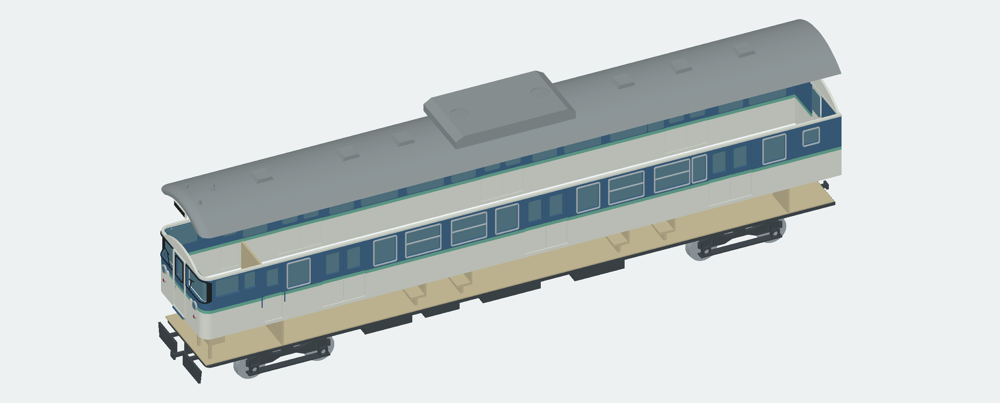
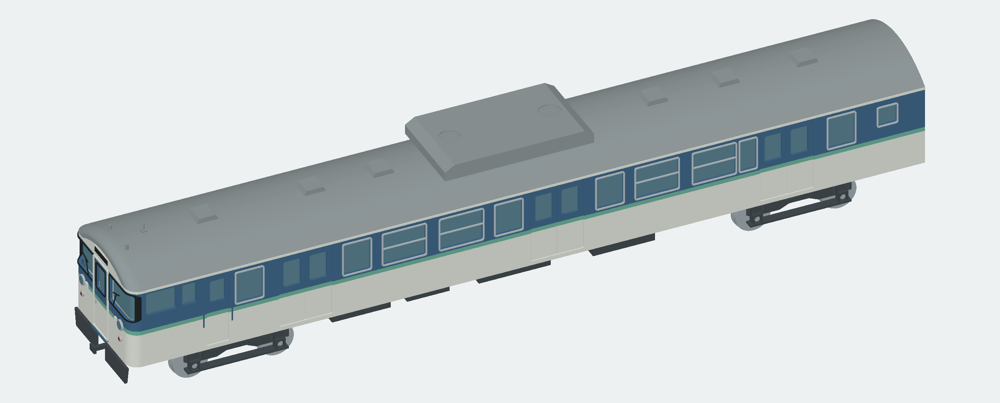
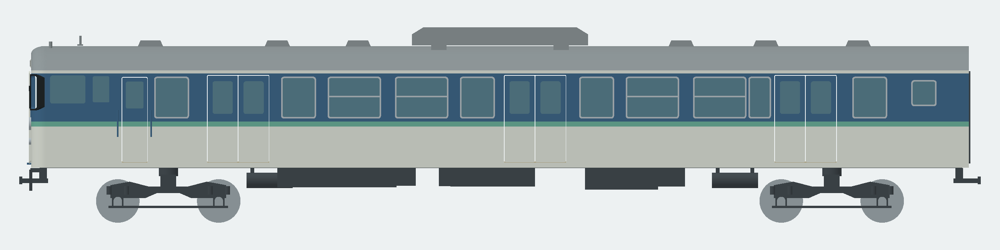
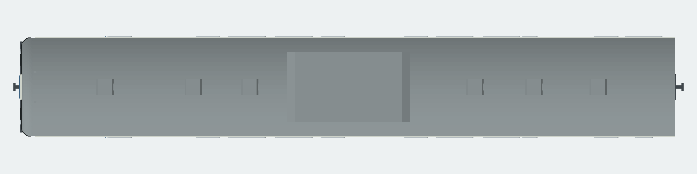
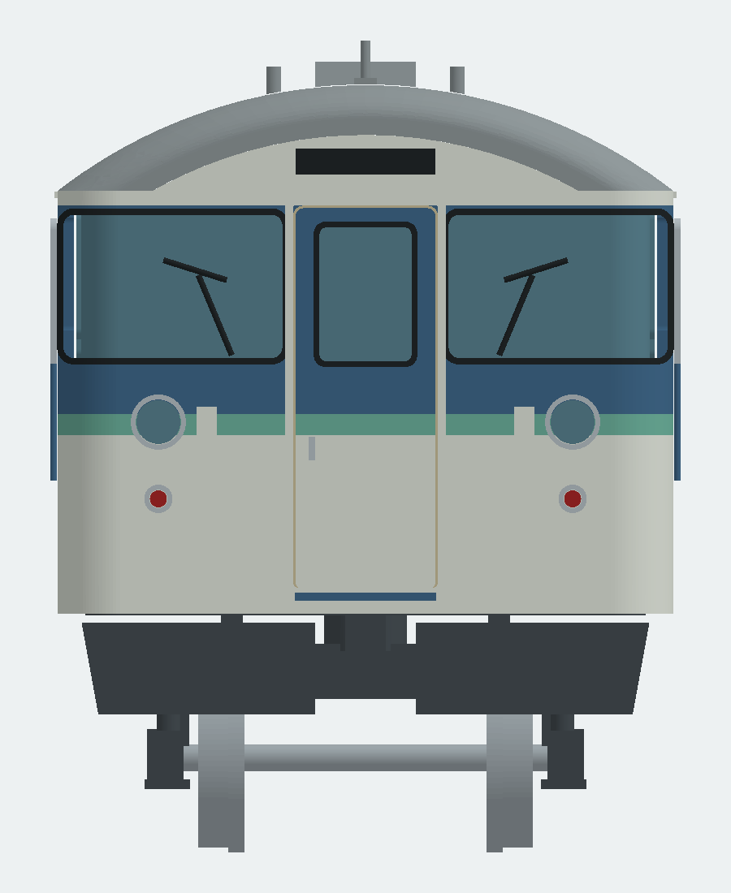
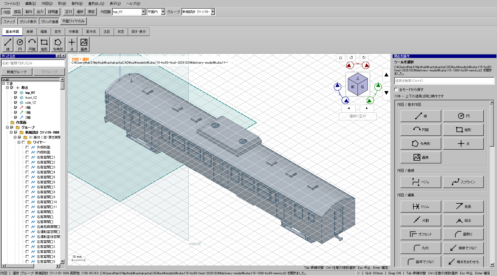

前頭部と部品構成


Hゴム、側面まで回る透明板、実際に抜いた窓、上下窓サッシ、屋根・床板・台車を別部品にしました。
後継モデル：実車調査・横長貫通扉窓を反映したモデルはこちら。このページは以前のモデルの記録です。
ユーザー指摘後の再調査で、折妻・側窓の左右差・裾絞り・台車等に相違や欠落を確認しました。下の画像・CADは修正前の比較資料です。11領域・72項目の実車調査と再設計方針
車体長243.750 mm / 幅36.875 mm / 屋根高45.675 mm。更新後を仮定した試作。特定車番・年度は未固定。既存モデルは流用していません。


Hゴム、側面まで回る透明板、実際に抜いた窓、上下窓サッシ、屋根・床板・台車を別部品にしました。



画像は同じ立体からの正投影。各視点の画像縮尺は統一していません。

Windowsネイティブ画面で起動・文書表示を確認。CAD内は部品ごとの塗り分け表示に未対応です。
| 版 | 部品 | 干渉組 | 開口等の点 | 再組立 |
|---|---|---|---|---|
| full | 149 | 75 | 44 | 0 |
| split | 156 | 75 | 44 | 6 |
生成物のBRep・STEP再読込・STL閉鎖性検査が成功。実車との形状一致の合格ではありません。実印刷・市販動力互換・走行は未試験。
局所曲率・窓配置・小機器には推定を含みます。特定車番の実測精密復元ではありません。出典・推定箇所と組立方法はREADMEに記録しました。
STLは各部品のベッド原点、STEPは組立座標。小型プリンタ版の最大部品は125 mm未満です。